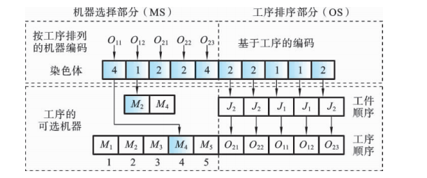
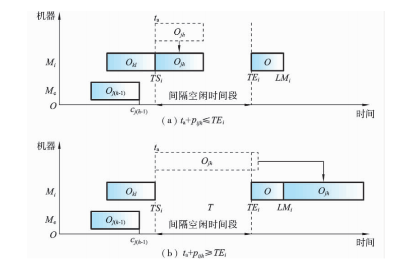
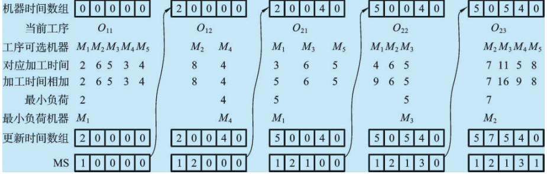
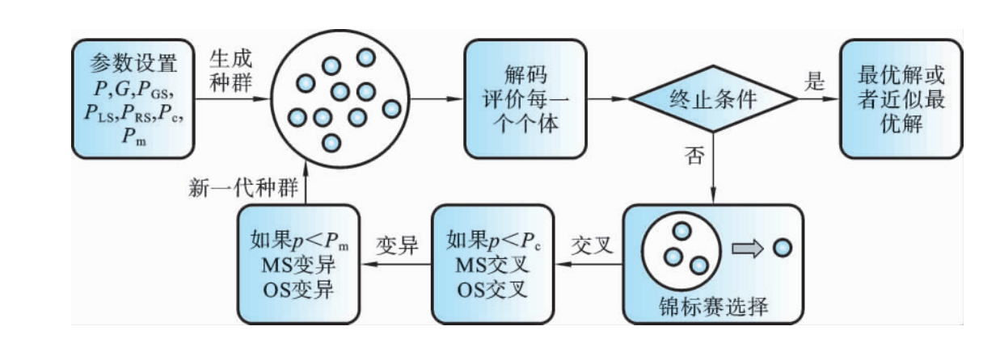

遗传算法求解柔性作业车间调度问题#
Reference
《柔性作业车间调度智能算法及其应用》高亮 张国辉 王晓娟 著
FJSP的染色体编码
- 染色体编码的意义染色体编码是遗传算法关键，需确保合法性、可行性等，直接影响遗传操作效率、求解速度与精度.
差的编码需修补，降低执行效率.
- FJSP编码对象针对FJSP的两个子问题：机器选择（确定工序加工机器）和工序排序（确定机器上工序加工顺序及时序）进行编码.
现有编码方法
集成编码：基因位\((h,j,i)\)表示工序任务，总长为工序总数\(T_a\).
易表达，但遗传操作易产非法解，改进困难.
分段编码：染色体分两部分（如\(A/B\)）对应机器选择和工序排序，长度均为\(T_a\).
部分方法易产非法解需修补，改进后效果提升但求解效率受影响.
MSOS整数编码
结构：分机器选择（MS）和工序排序（OS），适用于T-FJSP和P-FJSP.

机器选择部分：长度\(T_a\)，基因用整数表示工序所选机器在可选集中的顺序编号，保证可行解，无需因问题类型转换编码.
工序排序部分：基于工序编码，长度\(T_a\)，基因用工件号表示加工顺序.
示例说明：
- P-FJSP 实例 | 工件 | 工序 | \(M_1\) | \(M_2\) |
\(M_3\) | \(M_4\) | \(M_5\) |
|——|——-|———|———|———|———|———|| \(J_1\) | \(O_{11}\) | 2 | 6 | 5 | 3 | 4 || \(J_1\) | \(O_{12}\) | — | 8 | — | 4 | — || \(J_2\) | \(O_{21}\) | 3 | — | 6 | — | 5 || \(J_2\) | \(O_{22}\) | 4 | 6 | 5 | — | — || \(J_2\) | \(O_{23}\) | — | 7 | 11 | 5 | 8 | 机器选择部分：
工件 $ J_1 $的工序 $ O_{11} $ 有 5
台机器可选，对应的“4”表示在可选机器集中选择第 4
台机器，即在机器 $ M_4 $ 上加工.
工件 $ J_1 $的工序 $ O_{12} $ 有 2 台机器可选（机器 $ M_2 $
和 $ M_4 $），图中对应的“1”表示选择可选机器集中的第 1
台机器，即在机器 $ M_2 $ 上加工.
工序排序部分：
第一个“2”表示工件 $ J_2 $ 的工序 $ O_{21} $；
第二个“2”表示工件 $ J_2 $ 的工序 $ O_{22} $；
依此类推，转换成各工件工序的加工顺序为 $ O_{21}
:raw-latex:`\to `O\_{22} :raw-latex:`to `O_{11}
:raw-latex:`\to `O\_{12} :raw-latex:`to `O_{23} $.

FJSP的染色体解码
调度类型
活动调度：不推迟其他操作或破坏优先顺序，无闲置操作可提前加工.
半活动调度：不改变机器加工顺序，无操作可提前加工.
非延迟调度：存在工件等待加工时，对应机器不闲置.
关系：活动调度包含于半活动调度，非延迟调度包含于活动调度.
对正规性能指标（如最大完工时间），优化算法搜索活动调度集可保证最优解存在且提升效率；非正规指标（如提前/拖期惩罚），最优解可能在半活动调度集.
染色体解码步骤（以MSOS编码为例）
- 步骤1：机器选择部分解码转换机器选择部分为机器顺序矩阵 $ J_M $ 和时间顺序矩阵 $ T $. $
J_M(j,h) $ 表示工件 $ J_j $ 工序 $ O_{jh} $ 的机器号，$ T(j,h)
$ 表示对应加工时间.
示例：P-FJSP染色体机器选择部分[4 1 2 2 4]，转换为 $ J_M =
\(，\) T =
$，即 $ J_1 $ 的 $ O_{12} $ 在 $ M_2 $ 加工，时间为8.
步骤2：工序排序部分解码（工序插入法）
- 读取基因转换工序读取工序排序部分的一个基因，转换成相应工序 $ O_{jk} $.
- 获取加工机器和时间通过机器顺序矩阵 $ :raw-latex:`\boldsymbol{J_M}` $
和时间顺序矩阵 $ :raw-latex:`\boldsymbol{T}` $，得到工序 $
O_{jk} $ 的加工机器 $ M_i = J_M(j,h) $ 和加工时间 $ p_{jk}
= T(j,h) $.
- 确定加工开始时间
若工序 $ O_{jk} $ 是机器 $ M_i $ 上第一道加工工序，或为工件 $
J_j $ 的第 1 道工序：
若是工件 $ J_j $ 第 1 道工序，直接从机器 $ M_i $
的零时刻加工.
若是机器 $ M_i $ 首工序，直接从上道工序 $ O_{j(k-1)} $
结束时间开始加工.
否则，找到机器 $ M_i $ 上所有间隔空闲时间段
\([TS_i, TE_i]\)，按式 $ t_a =
:raw-latex:`max`(c_{j(k-1)}, TS_i) $ 计算工序 $ O_{jk} $
最早开始加工时间 $ t_a $，确保满足工件加工工序的顺序约束.
\(TS_i\) 表示间隔时间段的开始时间，\(TE_i\)
表示间隔空闲时间段的结束时间
判断插入条件
按是否有 $ t_a + p_{jk} :raw-latex:`leq `TE_i $
判断间隔空闲时间段是否满足插入条件：
若满足，插入当前空闲时间段（如图(a) 所示）.
若不满足，按式 $ t_b = :raw-latex:`max`(c_{j(k-1)}, LM_i)
$ 在机器 $ M_i $ 上进行加工（$ LM_i $ 表示当前机器 $ M_i $
最后一道工序的结束时间，如图(b) 所示）.

循环判断
判断工序排序部分的染色体是否读取完毕; 若满足，结束;
否则，转回步骤（1）继续.
FJSP的初始化
- 初始化的重要性与现有问题种群初始化是进化算法的关键环节，直接影响遗传算法的求解速度与质量.
FJSP需处理机器选择和工序排序，现有随机初始化方法生成的初始解质量低，机器负荷不均衡；其他方法（如AL）存在资源消耗大、算法复杂等问题.
GLR机器选择方法
全局选择（GS）
- 目标：平衡机器负荷，确保最短加工机器优先被选.
步骤：设置机器负荷数组并初始化为零→随机选工件及首道工序→计算可选机器加工时间与数组值总和→选时间最短机器，更新数组→重复直至所有工件工序选择完毕.

局部选择（LS）
- 目标：保证单个工件工序优先选择加工时间最短或机器负荷最小的机器.
步骤：初始化机器负荷数组→选首个工件及首道工序→计算时间和（不更新数组）→选机器并更新数组→完成工件所有工序后重置数组为零→循环处理剩余工件.

随机选择（RS）
目标：保证初始种群多样性，使种群分散于解空间.
步骤：选工件及首道工序→在可选机器集中随机生成顺序号，设置为基因位值→循环处理工件所有工序→重复直至所有工件完成.
交叉操作
- 交叉操作的目的与原则交叉操作旨在通过父代个体生成新个体，高效搜索解空间，降低有效模式破坏概率.
设计时需满足可行性、特征有效继承性等，避免冗余信息，单点点交叉等特征是关键保证.
机器选择部分（均匀交叉）
步骤：
在区间\([1, T_a]\)内随机生成整数\(r\)；
再随机生成\(r\)个互不相等的整数；
按整数位置，将父代染色体\(P_1\)和\(P_2\)对应基因复制到子代\(C_1\)和\(C_2\)，保持位置与顺序；
将\(P_1\)和\(P_2\)剩余基因依次复制到\(C_2\)和\(C_1\).
示例：

工序排序部分（改进POX交叉）
步骤：
随机划分工件集\(\{J_1, J_2, \cdots, J_n\}\)为Jobset1和Jobset2；
复制父代\(P_1\)、\(P_2\)中属于Jobset1:raw-latex:Jobset`2的工件到子代:math:`C_1 \(C_2\)，保持位置与顺序；
将\(P_1\)、\(P_2\)中不属于Jobset1:raw-latex:Jobset`2的工件复制到:math:`C_2 \(C_1\)，保持顺序.
示例：5个工件中划分包含\(J_1\)、\(J_3\)的工件集，通过复制对应部分生成新个体，继承父代优良特征.

变异操作
- 变异操作的目的变异操作通过随机改变染色体基因生成新个体，增加种群多样性，同时影响遗传算法（GA）的局部搜索能力，对解空间进行小范围扰动探索
- 机器选择部分的变异为保留个体信息与机器顺序，采用以下方式：
步骤 1：在变异染色体中随机选择 $ r $ 个位置.
**步骤
2**：依次选择每一个位置，将该位置的机器设置为当前工序可选机器集中加工时间最短的机器.
- 工序排序部分的变异（邻域搜索变异）机器选择部分（MS）不变时，通过邻域搜索优化工序排序：
步骤 1：在变异染色体中随机选择 $ r $
个不同基因，并生成其排序的所有邻域.
步骤 2：评价所有邻域的适应值，选出最佳个体作为子代.

选择操作
作用：让高性能个体以更高概率生存，避免有效基因丢失，保持种群规模，加快全局收敛性与计算效率。
常用方法：轮盘赌选择、种子选择、锦标赛选择等。
锦标赛选择流程：
从种群中选择 $ k $
个个体进行适应度比较，将适应度高的个体插入交叉池，重复此过程直至填满交叉池。该方法收敛性和计算复杂性表现更优。
3.2.7 改进遗传算法的求解步骤
参数设置：
设置种群规模 $ P_s $、迭代次数 $ P_{num} $、变异概率 $ G_{ps}
$，以及全局选择（GS）、局部选择（LS）、随机选择（RS）的种群比例 $
P_{GS}、P_{LS}、P_{RS} $。
种群初始化：
按 GS、LS、RS 比例，利用 GLR 初始化方法生成初始种群，确保初始解质量。
适应度评价：
计算种群中每个染色体个体的适应度值（目标值），判断是否满足终止条件（如达到目标值、迭代次数或计算时间），满足则输出最优解，否则继续。
选择操作：
执行锦标赛选择操作，选取下一代个体。
交叉操作：
对选中个体按交叉策略进行交叉（如机器选择部分均匀交叉，工序排序部分改进
POX 交叉）。
变异操作：
对满足变异概率的个体，按变异策略处理（机器选择部分选最短加工时间机器，工序排序部分基于邻域搜索变异）。
循环迭代：
返回步骤 3，重复评价、选择、交叉、变异过程，直至满足终止条件。
